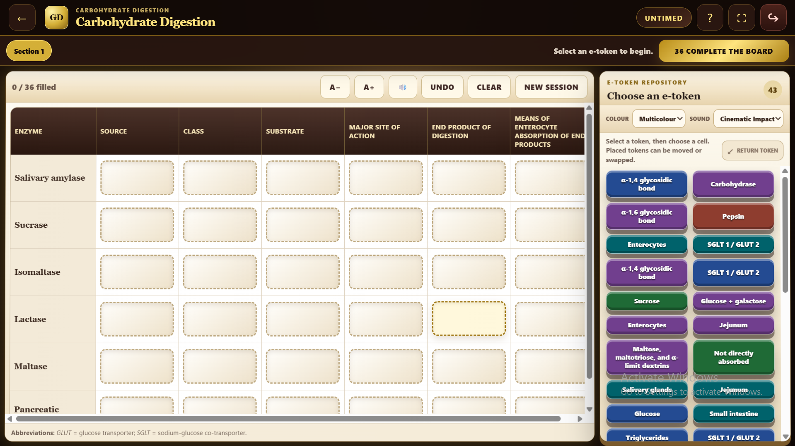

GutDigestInteractive digestion pathways
Research Software01
GutDigest
Interactive educational game supporting active learning and assessment of the gastrointestinal digestion of carbohydrates, proteins and lipids.
- Role
- Software Developer and Technical Architect
- Research area
- Physiology education, gastrointestinal physiology and serious games
- Interactive digestion pathways
- Active-learning tasks
- Immediate learner feedback
- Browser-based access
- Research-informed design